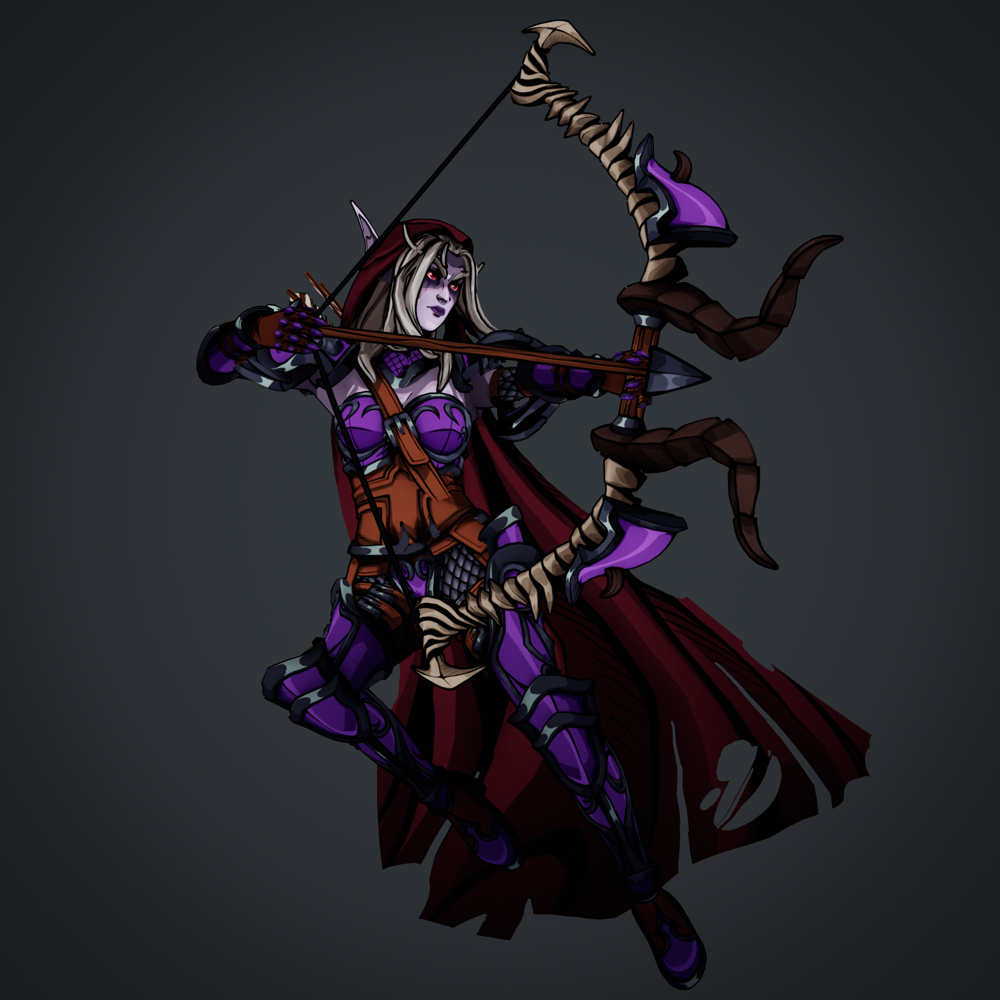

Sylvanas Windrunner — Stylized Character Study
This character was created as part of a series of classes I
developed while working as an instructor at M3DS Academy for 3D
and Game Design.
The goal was to cover the complete character production pipeline,
from sculpting and retopology to texturing and final presentation,
while adapting Sylvanas's textures to the stylistic direction of
Hades.

Stylized Texturing
One of the main challenges was adapting the Hades art style to
Sylvanas's textures while still preserving her recognizable
design. The textures were created in Substance Painter using
hand-painted techniques.


Bow Design Iteration
The bow required several sculpting passes to find the right
balance between realistic structure and the exaggerated shapes
that come with stylized assets.
I compared multiple depictions of the weapon across World of
Warcraft cinematics and adjusted the silhouette until it matched
the direction I was going for.